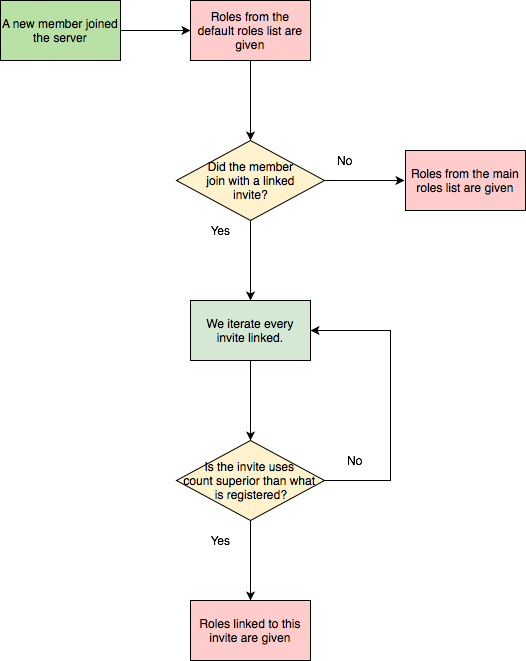

RoleInvite¶
Note
These docs refers to the beta 2b version.
Make sure you’re under the good version by typing [p]cog update.
This is the guide for the roleinvite cog. Everything you need is here.
[p] is considered as your prefix.
Installation¶
To install the cog, first load the downloader cog, included in core Red.:
[p]load downloader
Then you will need to install the Laggron’s Dumb Cogs repository:
[p]repo add Laggrons-Dumb-Cogs https://github.com/retke/Laggrons-Dumb-Cogs v3
Finally, you can install the cog:
[p]cog install Laggrons-Dumb-Cogs roleinvite
Warning
The cog is not loaded by default. To load it, type this:
[p]load roleinvite
Usage¶
Before giving the commands list, I’d like to show you how the cog is working.
The cog works with what I call invite links. Each invite link is linked to one or more roles. This mean that, every time a new user join the server, if he used the invite A to join the server, he will get the list of roles linked to the invite A.
You can link many roles to multiple invites, so you can imagine something like “click here if you are an engineer, else click here if you’re an architect”, and make roleinvite give the engineer or architect roles.
You can also link roles to default or main autorole. If you link roles to the main autorole, the new member will get these roles if he joined with an unlinked invite. If you link roles to the default autorole, new users will always get these roles, whatever invite he used.
Here’s a schema for a better understanding:
Here’s the list of all commands of this cog.
roleset¶
Syntax:
[p]roleset
Description
This is the main command used for setting up the code. It will be used for all other commands.
roleset add¶
Syntax:
[p]roleset add <invite|main|default> <role>
Description
Link a role to a Discord invite or a default autorole.
- If
inviteis specified (a discord invite link), a new invite link will be created with the role you gave. - If
mainis specified, the role will be linked to the main autorole. - If
defaultis given, the role will be linked to the default autorole.
You can link more roles by typing the command with the same argument.
Arguments
<invite>The object to link the role to.- If it is a Discord invite URL, the role will be linked to it.
- If it is
main, the role will be linked to the main autorole (role given if the invite used is not linked to any roles). - If it is
default, the role will be linked to the default autorole (role always given, whatever invite the user used).
<role>The role to be linked. Please give the exact role name or the ID.
roleset remove¶
Syntax:
[p]roleset remove <invite|main|default> [role]
Description
Unlink a role from an autorole. If the role is not given, the full autorole will be removed.
Arguments
<invite>The object that will be edited.- If it is a Discord invite URL, the role will be unlinked from it.
- If it is
main, the role will be unlinked from the main autorole. - If it is
default, the role will be unlinked from the default autorole.
[role>]Optional. The role to be unlinked. Please give the exact role name or the ID. If not given, the entire autorole will be removed.
roleset list¶
Syntax
[p]roleset list
Description
List all of the existing autoroles on the guild, with their linked roles.